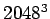
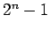
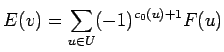
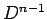
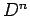

Next: Inverting great matrices Up: Problems and solving examples Previous: OOC LU and QR Contents
Many scientific applications make use of extremely large data sets, usually represented as n-dimensional scalar fields. For example, a typical 3D simulation may require regular grid of  samples. Such grids need to be stored and transmitted ie. to remote visualisation clients, which may take large amount of time due to their big sizes. In such case variety of data compression techniques may be used to reduce data size.
Of course several compression techniques exists for lower dimensional gridded data, like JPEG and others. Many method for 4D volumes were also proposed in recent years ie. wavelets, Discrete Cosine Transform or Run Length Encoding.
Recent research showed that there exists another algorithm, suitable for arbitrary n-dimensional scalar fields [9]. It's based on the Lorenzo predictor. It estimates the scalar value of a sample on the corner of an n-dimensional cube from the scalar values of the others  corners. The value of the scalar field F(u) is estimated using the following formula:

The estimated value computed from this formula in n-dimension is exact for all scalar functions that are polynomial of degree n-1.
Compressor in each step estimates next value in the scanline order and encodes the difference between the original and estimated value (which usually requires less bits). These differences may be encoded ie. with an adaptative arithmetic encoder.
As proved in [9] this algorithm may be easily adapted to out-of-core problems.
In fact, if properly written it requires only about  bytes of memory for compressing (or decompressing)
scalar field of  bytes size. For example, if we want to compress scalar field of  values
(each encoded in one byte which gives us 8GB size) we need only about 4MB memory window for this algorithm, and
resulting compression is generally comparable to wavelet compression.
values
(each encoded in one byte which gives us 8GB size) we need only about 4MB memory window for this algorithm, and
resulting compression is generally comparable to wavelet compression.
Kubek2k 2005-05-09